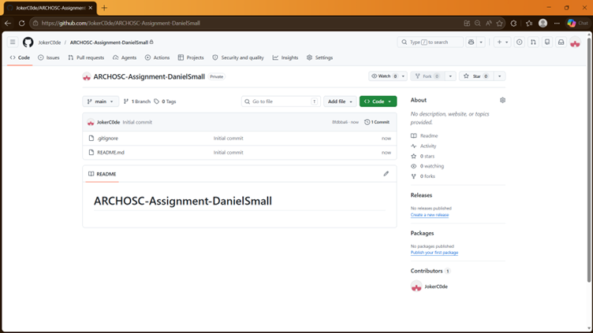

GitHub and CI/CD Lab 1
Section 1: Creating an Accessible Folder
For this lab, I created an accessible folder inside the Computer Science Workspace. The workspace is a dedicated area for Computer Science students and is stored locally on the lab machines.
Using the local workspace is useful because it avoids issues that can happen when Git and GitHub are used with OneDrive. Local storage makes it easier for Git to track files and manage the repository correctly.
What i also did: I opened the terminal and navigated to the GitHub and CICD directory and then initiated a GitHub repository, which made me a local repository within the folder GitHub and CICD.

I opened the terminal and navigated to the GitHub and CI/CD directory. I then used the git init command to initialise the folder as a local Git repository.
This created a hidden .git folder, which allows Git to track changes made to the files inside the project folder.

Section 2: Creating a GitHub Repository
I created a new GitHub repository for my portfolio. This allowed me to store my project online and push my local files to GitHub.

Section 3:
After creating the repository, I connected my local repository to GitHub using a remote origin. I then added, committed and pushed my website files.
This uploaded my local website files to GitHub so they could be stored online and later hosted using GitHub Pages.

What I did: I have created a basic website using html.

What I did: I have used terminal to stage and commit my new changes to my GitHub.

section 4
What I did: I have used terminal to push my changes to the main branch on GitHub.


What I did: I moved the CSS styling from inside the HTML file into a separate styles.css file. I then linked the CSS file using the link tag in the head section of index.html. This separates the website structure from the styling, which makes the code easier to manage and update. I made two CSS changes to my website. The first change was updating the background colour of the page to light blue. This made the website look cleaner and more visually interesting than the plain default white background. The second change was adding a styled white content box using border, border-radius, padding and box-shadow. This made the main content stand out clearly and improved the readability of the page.

What I have done: I have created a GitHub page and deployed it on GitHub publicly.

Reflection
I created a local project folder, initialised it as a Git repository, created a GitHub repository, and pushed my website files to GitHub. I also learned how to use HTML paragraph tags to add written explanations and image tags to add screenshots to my portfolio website.
This could be used in industry because developers use Git and GitHub to manage source code, track changes, and collaborate with other developers. Keeping evidence and documentation in a website is also useful because it clearly shows the development process and makes the project easier to review.